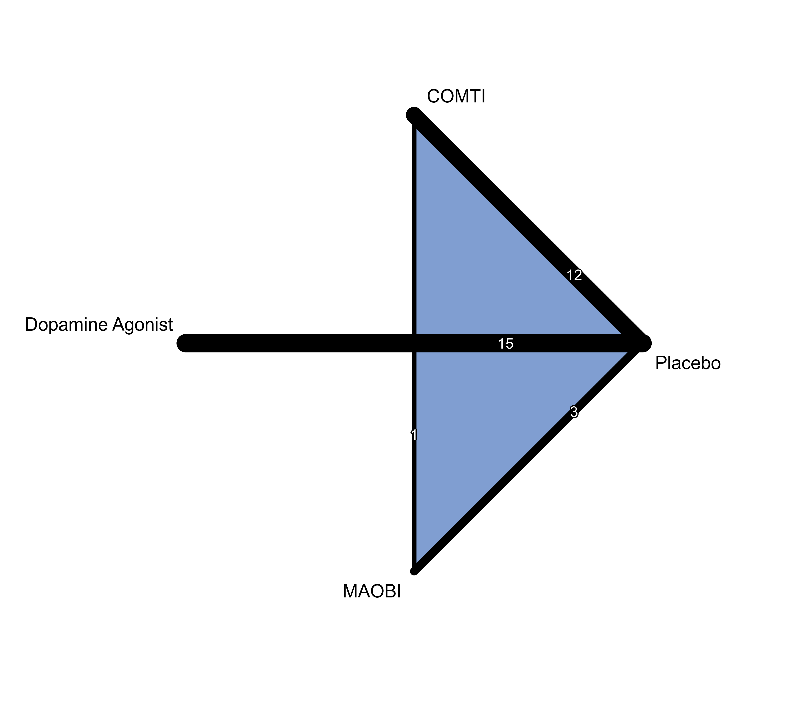
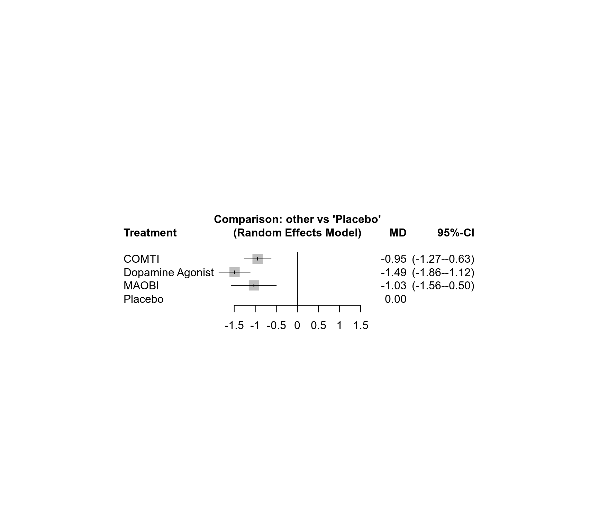
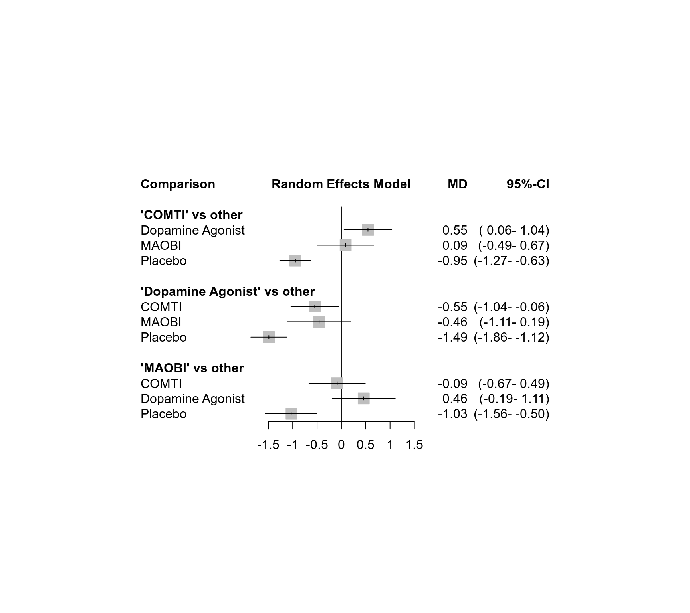
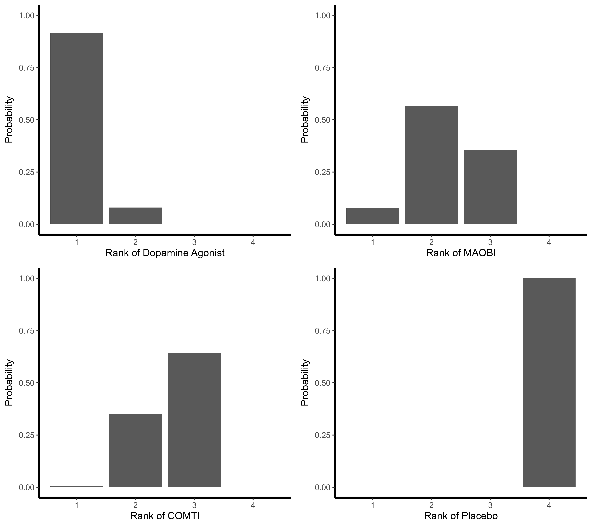

dat.stowe2010.RdResults from 29 trials assessing efficacy of three drug classes as adjuvant treatment to levodopa therapy in patients with Parkinson disease and motor complications.
dat.stowe2010The data frame contains the following columns:
| study | character | study label |
| id | integer | study id |
| t1 | character | treatment 1 |
| y1 | numeric | treatment effect arm 1 |
| sd1 | numeric | standard deviation arm 1 |
| n1 | integer | sample size arm 1 |
| t2 | character | treatment 2 |
| y2 | numeric | treatment effect arm 2 |
| sd2 | numeric | standard deviation arm 2 |
| n2 | integer | sample size arm 2 |
| t3 | character | treatment 3 |
| y3 | numeric | treatment effect arm 3 |
| sd3 | numeric | standard deviation arm 3 |
| n3 | integer | sample size arm 3 |
This dataset contains data from a Cochrane review assessing efficacy and safety of three drug classes as adjuvant treatment to levodopa therapy in patients with Parkinson disease and motor complications (Stowe et al., 2010).
The authors conducted three pairwise meta-analyses comparing dopamine agonists, catechol-O-methyl transferase inhibitors (COMTI), and monoamine oxidase type B inhibitors (MAOBI) with placebo. The primary outcome was the mean reduction of the time spent in a relatively immobile ‘off’ phase (mean off-time), calculated in hours per day. Relative treatment effects were expressed as mean difference. Data on this outcome were available for 5,331 patients from 28 studies comparing an active treatment with placebo and one three-arm study comparing two active treatments with placebo.
Stowe, R., Ives, N., Clarke, C. E., Deane, K., Hilten, V., Wheatley, K., Gray, R., Handley, K., & Furmston, A. (2010). Evaluation of the efficacy and safety of adjuvant treatment to levodopa therapy in Parkinson's disease patients with motor complications. Cochrane Database of Systematic Reviews, 7, CD007166. https://doi.org/10.1002/14651858.CD007166.pub2
medicine, raw mean differences, network meta-analysis
### Show results from three studies (including three-arm study LARGO)
dat.stowe2010[18:20, ]
#> study id t1 y1 sd1 n1 t2 y2 sd2 n2 t3 y3 sd3 n3
#> 18 COMTI(E) INT-OZ 18 COMTI -0.86 2.90 99 Placebo -0.54 3.13 63 NA NA NA
#> 19 LARGO 19 COMTI -1.20 2.21 218 Placebo -0.40 2.21 218 MAOBI -1.18 2.23 222
#> 20 COMTI(E) Nomecomt 20 COMTI -1.30 2.20 85 Placebo -0.10 2.45 86 NA NA NA
### Load netmeta package
suppressPackageStartupMessages(library(netmeta))
### Print mean differences with two digits and standard errors with 3
### digits
settings.meta(digits = 2, digits.se = 3)
### Transform data from wide arm-based format to contrast-based
### format. Argument 'sm' must not be provided as the mean difference
### is the default in R function metacont() called internally.
pw <- pairwise(treat = list(t1, t2, t3), n = list(n1, n2, n3),
mean = list(y1, y2, y3), sd = list(sd1, sd2, sd3),
studlab = study, data = dat.stowe2010, sm = "MD")
### Show calculated mean differences (TE) for three studies
selstudy <- c("COMTI(E) INT-OZ", "LARGO", "COMTI(E) Nomecomt")
subset(pw, studlab %in% selstudy)[, c(3:7, 10, 1)]
#> studlab treat1 treat2 n1 mean1 mean2 TE
#> 18 COMTI(E) INT-OZ COMTI Placebo 99 -0.86 -0.54 -0.32
#> 19 LARGO COMTI Placebo 218 -1.20 -0.40 -0.80
#> 20 LARGO COMTI MAOBI 218 -1.20 -1.18 -0.02
#> 21 LARGO Placebo MAOBI 218 -0.40 -1.18 0.78
#> 22 COMTI(E) Nomecomt COMTI Placebo 85 -1.30 -0.10 -1.20
### Conduct random effects network meta-analysis (NMA)
### with placebo as reference
net <- netmeta(pw, fixed = FALSE, ref = "plac")
### Show network graph
netgraph(net, number = TRUE, multiarm = TRUE,
cex = 1.25, offset = 0.025,
cex.number = 1, pos.number.of.studies = 0.3)

### Print NMA results
net
#> Number of studies: k = 29
#> Number of pairwise comparisons: m = 31
#> Number of observations: o = 5331
#> Number of treatments: n = 4
#> Number of designs: d = 4
#>
#> Random effects model
#>
#> Treatment estimate (sm = 'MD', comparison: other treatments vs 'Placebo'):
#> MD 95%-CI z p-value
#> COMTI -0.95 (-1.27–0.63) -5.79 < 0.0001
#> Dopamine Agonist -1.49 (-1.86–1.12) -7.88 < 0.0001
#> MAOBI -1.03 (-1.56–0.50) -3.81 0.0001
#> Placebo . . . .
#>
#> Quantifying heterogeneity / inconsistency:
#> tau^2 = 0.1518; tau = 0.3896; I^2 = 43.9% (12.3%-64.2%)
#>
#> Tests of heterogeneity (within designs) and inconsistency (between designs):
#> Q d.f. p-value
#> Total 48.15 27 0.0074
#> Within designs 46.91 25 0.0050
#> Between designs 1.24 2 0.5376
### Forest plot with NMA results
forest(net)

### Forest plot showing all network estimates of active treatments
### compared with other treatments
forest(net, ref = c("C", "D", "M"), baseline = FALSE, drop = TRUE)

### Treatment ranking using P-scores
netrank(net)
#> P-score
#> Dopamine Agonist 0.9677
#> MAOBI 0.5664
#> COMTI 0.4659
#> Placebo 0.0000
### Rankogram with all ranking probabilities
set.seed(1909)
ran <- rankogram(net)
ran
#> Rankogram (based on 1000 simulations)
#>
#> Random effects model:
#>
#> 1 2 3 4
#> COMTI 0.0060 0.3520 0.6420 0.0000
#> Dopamine Agonist 0.9170 0.0800 0.0030 0.0000
#> MAOBI 0.0770 0.5680 0.3550 0.0000
#> Placebo 0.0000 0.0000 0.0000 1.0000
plot(ran)

### Treatment ranking using SUCRAs
netrank(ran)
#> SUCRA
#> Dopamine Agonist 0.9713
#> MAOBI 0.5740
#> COMTI 0.4547
#> Placebo 0.0000
#>
#> - based on 1000 simulations
### League table showing network and direct estimates
netleague(net, seq = netrank(net), ci = FALSE)
#> League table (random effects model):
#>
#> Dopamine Agonist . . -1.49
#> -0.46 MAOBI 0.02 -1.03
#> -0.55 -0.09 COMTI -0.93
#> -1.49 -1.03 -0.95 Placebo